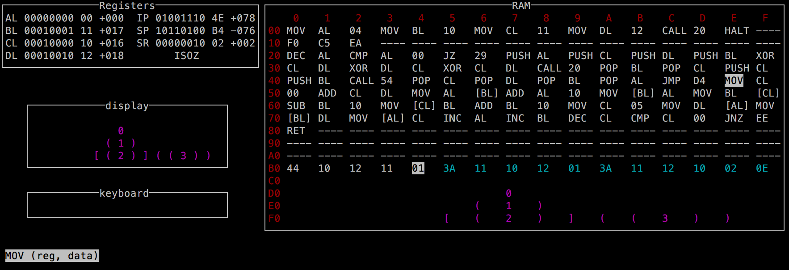

Cette page contient les ressources de l'activité du 31 mai 2017 sur l'assembleur.

Assembleur
Installation
- télécharger sur python.org (voir ici pour windows) la version embeddable zip file (soit en 32 bits, soit en 64 bits);
- télécharger unicurses (archive en zip) puis la décompresser et mettre le répertoire unicurses dans le répertoire de Python.